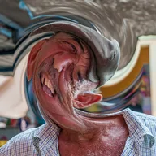

소용돌이

레이어를 중심 주위로 소용돌이처럼 비틀어, 가운데는 가장 강하게 하고 반경(레이어 크기에 대한 비율)에서 서서히 사라지게 합니다. 강도가 음수이면 반대 방향으로 비틀립니다.
소용돌이는 소용돌이처럼 한 점을 중심으로 레이어를 비틉니다. 중심는 비틀림의 중심, 강도는 얼마나 비틀지(음수는 반대 방향), 반경은 중심에서 얼마나 멀리 닿을지 정합니다. 나선형 전환을 원하면 강도를 0에서 시작해 애니메이션하세요.
설정
| 설정 | 유형 | 범위 | 기본값 |
|---|---|---|---|
| 중심 | 점 (X, Y) | 0~1 | 0.5, 0.5 |
| 강도 | 숫자 | -0.5~0.5 | 0.1 |
| 반경 | 숫자 | 0~3 | 0.3 |